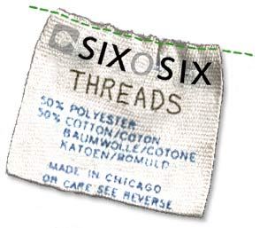

 |
It was inevitable. It had to happen, and I knew I would bear witness to the end. It was one of those moments that seems to be a win-win situation, but 50 years from now will require Terminator-esque corrections. Cyborgs from the future – who look amazingly like Italian it-girl Mariacarla Boscono – will be sent back in time to change that one moment in order to save humanity: They will keep Karl Lagerfeld from joining the ranks of H&M. Oh the horror. Imagine legions of 14-year-old girls wearing skinny, super-cute jeans flopping fold-up fans, dark glasses hiding their dead, dead eyes. I'll always remember where I was when I discovered Lagerfeld would be collaborating with the behemoth that is H&M – I was planning a trip to the Drake for a day of wine and shopping when my heart was stopped cold by a Chanel-logo arrow. What comes next will be bleak. It will be a future that inspires madness and ruffles. Lagerfeld's diet will become requisite and the world will finally be teeny, tiny and thin. All that excess skin will be made into wallets and belts. I beg of you, make it a quick death. For those whose eyes aren't open wide enough to see this vision of seventh-circle hell, allow me to show you. With Lagerfeld's designs, H&M will have the ability to rule the world. They'll make more money in the first year of this collaboration than all the big houses combined. Fare thee well, Gucci. H&M will be in every fashion spread in every magazine all over the world. Little Lindsay Lohan wannabes will join the NKA and flounce around with their cheeks sucked in, fans in hand. Uniformity will be in the form of tweed minis and gorgeous denim. Every man, woman and child will be required to dress to the specifications of H&M. How can we stop this sea of chic chicklets from taking over? I offer up a brave, shocking, even morally depraved alternative. Shop now and put H&M out of business. Fight against falling in love with old lovable Karl's cuts and details. Shop at the smaller places, those fighting the good fight. My brave fashion fighters, join me as we shop to save the world. I have, as your fearless leader, found the bright brave boutiques that will be our salvation. The first stop on the underground Concorde is Smack, located at1650 Division Street. Smack's brilliance is in its camouflage techniques. They load the windows with cute, girlie clothes only to have the cooler pieces tucked away inside. Seersucker suits, tank tops and pretty skirts will throw any H&M spy off-course. Delve into the back and you'll find the sale rack, loaded with gorgeous fur vests and wraps and skirts that are easily worth a pretty fortune. The one pièce de résistance for the resistance? Ties. Yes, ties. Wide, patterned and in colors only Mr. Kotter could wear, these ties are fab. Don't turn your nose up just, yet my comrades – these ties have crystal appliqués of phrases dear to our hearts (fag hag, anyone?). Take that, Karl! The next meeting point is down the street – 1740 W. Division Street – at one of the best empire-fighting shops around. Yes, Noir, the always-awesome store that not nearly enough people frequent. Noir is calculating, also hiding the best pieces in the back. Let the H&Mers rifle through the pink minis and white cargo pants. I want to hide behind the smock dresses and cut out blouses (In mauve! Not pink, but mauve!) that hang in the nether regions of the store. Where else can you find stilettos that are cheap but last longer than anything from H&M ever has? Next up is an old, old store that many walk past, not realizing the bounty that lays inside. Studio 90, at 5239 N. Clark Street, repels any NKA recruits with offerings for the more mature woman. But if you venture in, you'll be rewarded with a sight that will have you singing in the rain. Wellies! The absolutely perfect way to slosh around in the rain. Studio 90's supply was dwindling (any size 9 gals out there, hurry your big feet over for one of the last few pairs) but they promise to get more in post-summer. The big rubbery boots come in black and lovely stripes a la Paul Smith. These shoes are also perfect for stomping on the cheap shoes of the NKA. The final stop in this, our first battle, is Xcito, located at 2858 N. Clark Street. Xcito is a bastion of originality with pant suits that could be worn in Bombay, khaki jackets with cuts that fit perfectly at the waist and more dresses and skirts with cut-outs and detailing that are making me smile as I write this. Take that, you uniformed teeny boppers! My fashion fighters, unite in this dark and troubling time, and help keep the evil empire from fully rising. Otherwise, can someone get any DNA from Ms. Boscono? |